Практическая работа №3.1
Практическое задание 1
Воспользуйтесь проектом из практики 2.1: Напишите запрос на создание 6-7 новых автовладельцев и 5-6 автомобилей, каждому автовладельцу назначьте удостоверение и от 1 до 3 автомобилей. Задание можете выполнить либо в интерактивном режиме интерпретатора, либо в отдельном python-файле. Результатом должны стать запросы и отображение созданных объектов.
>>> from project_first_app.models import *
>>> Owner.objects.all()
<QuerySet []>
>>> License.objects.all()
<QuerySet []>
>>> Car.objects.all()
<QuerySet []>
>>> Ownership.objects.all()
<QuerySet []>
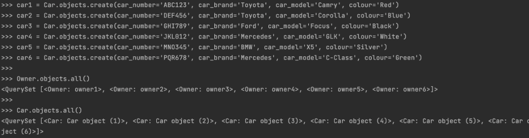
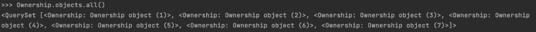
Практическое задание 2
1) Выведете все машины марки “Toyota”
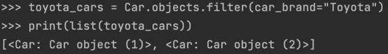
2) Все водители по имени Bob

3) Взяв любого случайного владельца получить его id,
и по этому id получить экземпляр удостоверения
в виде объекта модели (можно в 2 запроса)
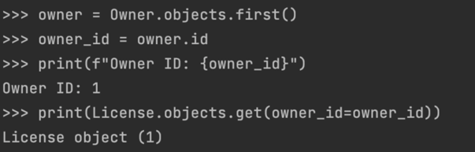
4) Вывести всех владельцев красных машин
(или любого другого цвета, который у вас присутствует)
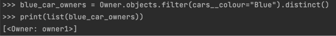
5) Найти всех владельцев, чей год владения машиной
начинается с 2010 (или любой другой год, который присутствует у вас в базе)
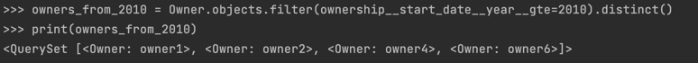
Практическое задание 3
1) Вывод даты выдачи самого старшего водительского удостоверения
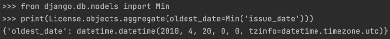
2) Укажите самую позднюю дату владения машиной, имеющую какую-то из существующих моделей в вашей базе
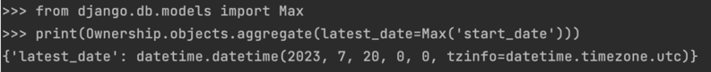
3) Выведите количество машин для каждого водителя
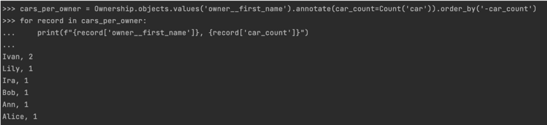
4) Подсчитайте количество машин каждой марки
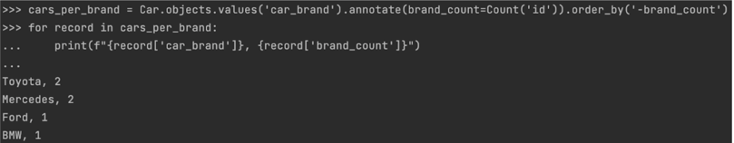
5) Отсортируйте всех автовладельцев по дате выдачи удостоверения
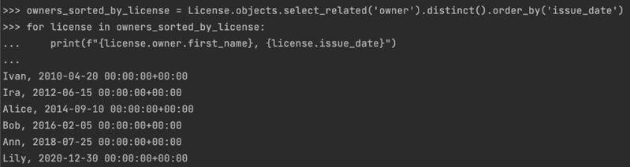